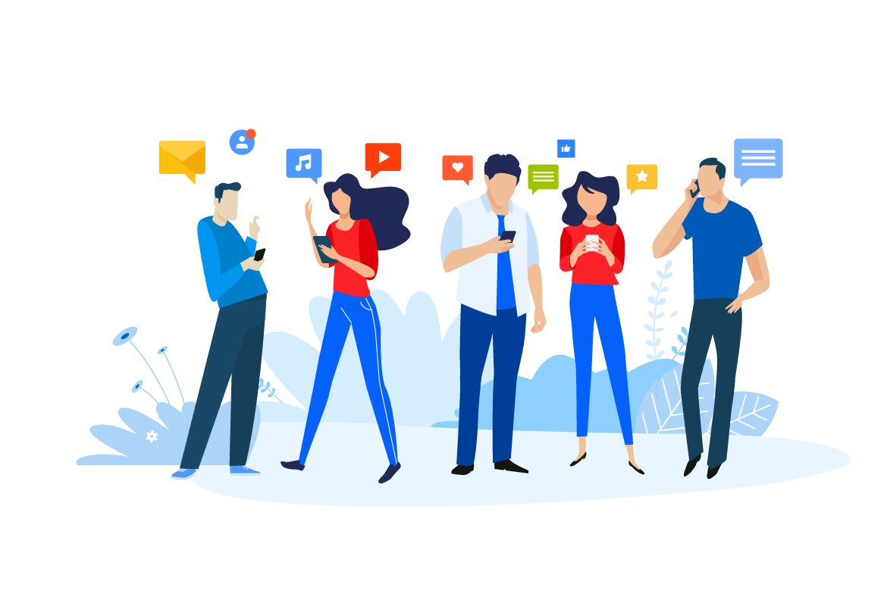

Latar Belakang

Internet marketing merupakan bentuk usaha baru dalam memasarkan produk atau jasa serta membangun komunikasi dengan konsumen melalui internet. Penggunaan internet marketing sebagai media komunikasi pemasaran di pengaruhi oleh pesatnya perkembangan teknologi komunikasi terutama internet. Internet sudah mengubah wajah dunia saat ini, terutama dalam dunia bisnis,internet berkembang dengan cepat dan menjadi bagian paling penting dalam kehidupan masyarakat. Dengan bantuan internet manusia dapat terhubung dengan siapapun di berbagai belahan dunia bahkan tanpa harus mengenal satu sama lain terlebih dahulu. Kolaborasi antara komputer dan internet ini telah menghasilkan sesuatu yang baru, yang mampu menggeser cara manual menuju tatanan komunikasi dengan cara-cara digital
Pada perkembangan komunikasi pemasaran internet marketing merupakan sarana yang sedang marak dibicarakan, dan digunakan diseluruh daerah. Dewasa ini banyak pelaku usaha mulai mengembangkan usaha-usaha yang dulu di kelola secara off-line mulai kearah online. Di samping untuk menghemat biaya sekaligus untuk mempermudah para pelanggan dalam menikmati produk-produk yang ditawarkanPara pelaku bisnis yang dulu menggunakan atau memasarkan produknya melalui toko nyata atau media konvesional kini mulai beralih menggunakan internet sebagai media pemasaranya melalui onlineshop atau toko online, jejaring sosial,web,video ads, banner,dll. Dengan pertumbuhan tingkat pengguna internet di Indonesia yang selalu mengalami peningkatan tiap tahunnya, maka layanan belanja secara online juga mengalami peningkatan mengikuti tumbuhnya minat belanja secara online. Pertumbuhan atau peningkatan jumlah masyarakat dalam menggunkan internet ini menjadi latar belakang kami Dinas Tenaga Kerja, Koperasi Usaha Kecil dan Menengah Kota Madiun mencoba membangun sebuah website galeri produk unggulan UMKM Kota Madiun untuk bisa hadir memfasilitasi para pelaku UMKM dalam hal permasalahan tersebut.